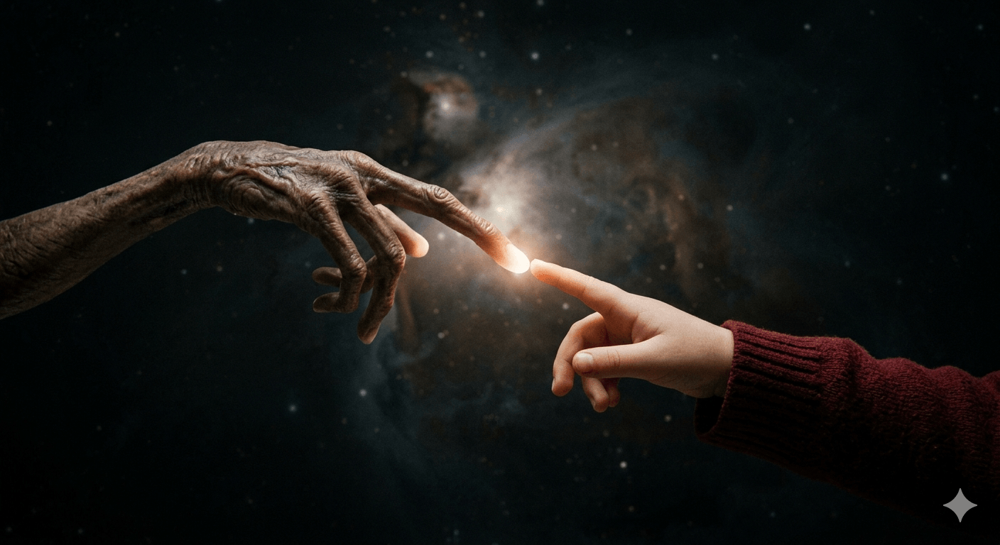

Predstavte si obraz, ktorý pozná každé dieťa na planéte. Dva prsty, ktoré sa stretávají v magickom svetle a spájajú dva svety. Väčšina ľudí si myslí, že ide o fotku alebo digitálnu grafiku. Pravdou je, že ide o ručne maľovanú olejomaľbu, ktorá desaťročia visela v tichosti na stene a čakala na moment, kedy prepíše históriu aukčných siení. Cena? Astronomických 3 940 000 dolárov.
Toto nie je len plagát. Je to moderná „Sixtínska kaplnka“ kinematografie, ktorá dokazuje, že filmové umenie už dávno nie je len lacnou reklamou, ale investíciou kategórie „A“.

Michelangelo v službách Hollywoodu
Keď Steven Spielberg v roku 1982 dokončoval E.T. Mimozemšťana, potreboval plagát, ktorý by vyvolal pocit zázraku. Najal majstra Johna Alvyna a dal mu zadanie, ktoré zmenilo všetko. Alvyn sa neinšpiroval sci-fi komiksami, ale samotným Michelangelom. Kompozícia dvoch prstov je priamym odkazom na „Stvorenie Adama“ z klenby Sixtínskej kaplnky. Spielberg chcel, aby ľudia cítili božský dotyk medzi človekom a vesmírom.
Tajomstvo detskej modelky
Maľba vznikala v prísnom utajení. Aby Alvyn dosiahol dokonalú emóciu, ako model pre ľudskú ruku mu poslúžila jeho vlastná dcéra. Tá vtedy netušila, že ruka, ktorú otec prekresľuje na plátno, sa stane najkopírovanejším obrazom 80. rokov. Mimozemská ruka s dlhým svietiacim prstom bola potom dotvorená podľa návrhov z dielne trikových mágov.
40 rokov v súkromnej zbierke
Zatiaľ čo svet zaplavili milióny kópií tohto plagátu, originálna olejomaľba (tzv. Masterwork) bola dlhé roky považovaná za stratenú alebo zničenú. V skutočnosti bola v držbe producenta Boba Bendetsona, ktorý ju mal vo svojej súkromnej zbierke viac ako štyri desaťročia. Keď sa dielo v roku 2023 objavilo na aukcii, zberatelia pochopili, že ide o jedinú šancu vlastniť „rodný list“ popkultúrneho fenoménu.
Prečo stojí takmer 4 milióny?
V marci 2026 sa hodnota tohto originálu ustálila na hranici 3 940 000 $. Je to suma, ktorá šokovala svet tradičného umenia. Prečo toľko? Pretože ide o originálny podklad (tzv. Original Concept Art), ktorý definoval vizuálnu identitu celého filmu. V ére digitálneho umenia je táto ručná práca nenahraditeľným reliktom doby, kedy Hollywoodu vládli štetce a olejové farby.
Imagine a painting known by every child on the planet. Two fingers meeting in a magical glow, bridging two completely different worlds. Most people assume it is a photograph or a digital graphic. In reality, it is a hand-painted oil masterpiece that hung silently on a wall for decades, waiting for the perfect moment to rewrite the history of auction houses. The price tag? An astronomical $3,940,000.
This is not just a movie poster. It is the modern "Sistine Chapel" of cinema, proving that film art has long ceased to be mere commercial advertising and has become an A-list alternative investment.
Michelangelo in the Service of Hollywood
When Steven Spielberg was finalizing E.T. the Extra-Terrestrial in 1982, he needed a poster that would evoke a pure sense of wonder. He hired master illustrator John Alvin and gave him a brief that changed everything. Instead of drawing inspiration from sci-fi comic books, Alvin looked to Michelangelo himself. The composition of the two fingers is a direct homage to "The Creation of Adam" from the ceiling of the Sistine Chapel. Spielberg wanted people to feel a divine connection between humanity and the cosmos.
The Secret of the Child Model
The painting was created under strict secrecy. To capture the perfect emotion, Alvin used his own daughter as a model for the human hand. At the time, she had no idea that the hand her father was sketching onto the board would become the most replicated image of the 1980s. The alien hand, with its elongated, glowing finger, was later finalized based on designs from the film's special effects wizards.
40 Years in a Private Collection
While millions of copies of this poster flooded the world, the original oil painting—the masterwork—was considered lost or destroyed for decades. In truth, it was safely held by Hollywood producer Bob Bendetson, who kept it in his private collection for over forty years. When the artwork finally surfaced at auction in 2023, collectors knew it was a once-in-a-lifetime opportunity to own the "birth certificate" of a pop-culture phenomenon.
Why is it Worth Nearly $4 Million?
As of March 2026, the value of this original piece has stabilized at $3,940,000. It is a sum that shocked the traditional fine art world. Why so much? Because this is the original concept art that defined the entire visual identity of the movie. In today's era of digital design, this hand-painted work is an irreplaceable relic of a time when brushes and oil paints ruled Hollywood.
Stellen Sie sich ein Gemälde vor, das jedes Kind auf diesem Planeten kennt. Zwei Finger, die sich in einem magischen Licht treffen und zwei Welten miteinander verbinden. Die meisten Menschen denken, es handele sich um ein Foto oder eine digitale Grafik. In Wirklichkeit ist es ein handgemaltes Ölgemälde, das jahrzehntelang im Stillen an einer Wand hing und auf den Moment wartete, an dem es die Geschichte der Auktionshäuser neu schreiben sollte. Der Preis? Astronomische 3.940.000 Dollar.
Dies ist nicht nur ein Filmposter. Es ist die moderne „Sixtinische Kapelle“ des Kinos, die beweist, dass Filmkunst längst keine bloße Werbung mehr ist, sondern eine alternative Investition der Spitzenklasse (Kategorie „A“).
Michelangelo im Dienste Hollywoods
Als Steven Spielberg 1982 den Film „E.T. – Der Außerirdische“ fertigstellte, brauchte er ein Plakat, das ein Gefühl von Wunder und Magie hervorrufen sollte. Er engagierte den Meister-Illustratoren John Alvin und gab ihm eine Aufgabe, die alles veränderte. Alvin ließ sich nicht von Sci-Fi-Comics inspirieren, sondern von Michelangelo selbst. Die Komposition der zwei Finger ist eine direkte Hommage an „Die Erschaffung Adams“ an der Decke der Sixtinischen Kapelle. Spielberg wollte, dass die Menschen die göttliche Verbindung zwischen Menschheit und Kosmos spüren.
Das Geheimnis des kindlichen Modells
Das Gemälde entstand unter strengster Geheimhaltung. Um die perfekte Emotion einzufangen, nutzte Alvin seine eigene Tochter als Modell für die menschliche Hand. Damals ahnte sie noch nicht, dass die Hand, die ihr Vater auf die Leinwand skizzierte, zum meistkopierten Bild der 1980er Jahre werden sollte. Die außerirdische Hand mit dem langen, leuchtenden Finger wurde später nach Entwürfen der Spezialeffekt-Spezialisten des Films fertiggestellt.
40 Jahre in einer Privatsammlung
Während Millionen von Kopien dieses Posters die Welt überschwemmten, galt das originale Ölgemälde – das Meisterwerk – jahrzehntelang als verloren oder zerstört. In Wahrheit befand es sich im Besitz des Hollywood-Produzenten Bob Bendetson, der es mehr als vier Jahrzehnte in seiner Privatsammlung hütete. Als das Werk 2023 schließlich bei einer Auktion auftauchte, erkannten Sammler sofort, dass dies die einmalige Chance war, die „Geburtsurkunde“ eines Popkultur-Phänomens zu besitzen.
Warum ist es fast 4 Millionen wert?
Im März 2026 hat sich der Wert dieses Originals bei der Marke von 3.940.000 $ stabilisiert. Es ist eine Summe, die die traditionelle Kunstwelt schockierte. Warum so viel? Weil es sich um die originale Konzeptkunst (Original Concept Art) handelt, die die gesamte visuelle Identität des Films definierte. Im heutigen Zeitalter des digitalen Designs ist dieses handgemalte Werk ein unersetzliches Relikt aus einer Zeit, als Pinsel und Ölfarben Hollywood beherrschten.